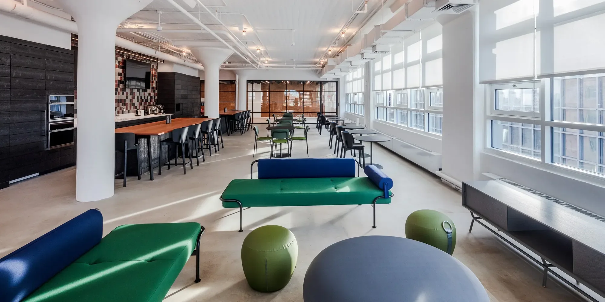
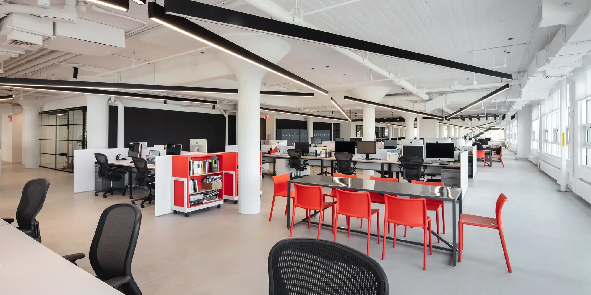

Work with us,win with us
We are a close-knit collective of makers and doers creating digital products, marketing, and content to drive brands forward. We also love to make eachother laugh, share our favorite hole-in-the-wall lunch spots, swap travel stories, and support one another in living our best lives beyond brainstorms, laptops, Figma boards, and campaign decks.
Job openings

Perks & benefits
We’ll support you in finding a work-life balance that feeds your soul, if you bring your passion, care, and consideration to the work we produce together on the easy days and the challenging ones.
- Hybrid Work Model
- Professional Growth
- Unlimited PTO
- Health, Dental & Vision Insurance
- 401K matching
- Freelance PhotographerNY
- Senior CGI Generalist – Automotive & ProductNew York
- Senior Creative Strategist - Performance MarketingNew York
- Senior Project Manager - Web & EcommerceNew York
- Project ManagerNew York
- VFX AI PipelineNew York
- SR Art Director - CGINew York
- Project Manager AINew York
- Compositing ArtistNew York
- CGI LeadNew York
- CGI LightingNew York
- AI DeveloperNew York
- AI Creative DirectorNew York
- Freelance DesignerNY